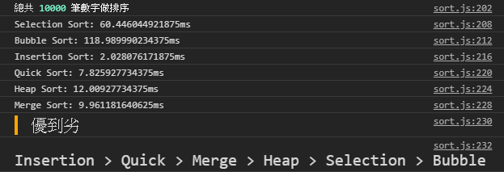

Prev
0
Next
Sorting Algorithm 排序演算法
F12 / Ctrl+Shift+I 打開控制台

穩定的排序
泡沫排序（bubble sort）— O(n
2
)
插入排序（insertion sort）— O(n
2
)
合併排序（merge sort）— O(nlogn)
不穩定的排序
選擇排序（selection sort）— O(n
2
)
堆積排序（heap sort）— O(nlogn)
快速排序（quick sort）— O(nlogn)